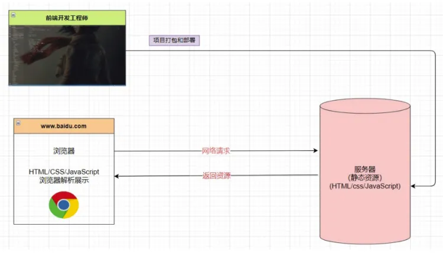
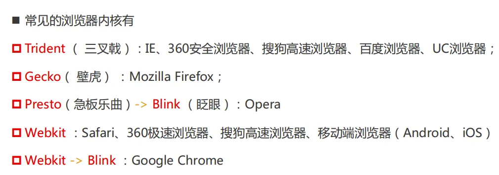
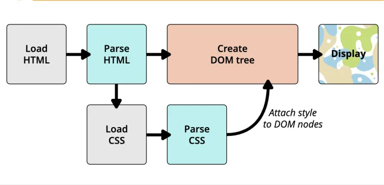

一、邂逅Web开发
1、网页的显示过程
- Web开发工程师开发项目（HTML、CSS、JS、VUE、React、TS）
- Web开发工程师打包、部署项目到服务器
- 用户在浏览器里输入一个网址
- 浏览器会根据这个网址找到对应的服务器，向这台服务器请求对应目录下的静态资源（HTML、CSS、JS）
- 服务器返回静态资源给浏览器
- 浏览器对静态资源进行解析和渲染，就显示在用户眼前了
2、网页的组成

- HTML：主要负责网页的结构和内容
- CSS：主要负责网页的样式
- JS：主要负责网页的交互
3、浏览器和浏览器内核
我们已经知道了网页是由HTML、CSS、JS组成的，那这些枯燥的代码是如何被显示成多彩的网页的呢？这个工作其实是由浏览器来完成的，浏览器最核心的部分就是渲染引擎，一般也称为浏览器内核，它就负责解析HTML、CSS、JS这些静态资源，并负责渲染。
不同的浏览器可能使用了不同的浏览器内核，而不同的浏览器内核有不同的解析和渲染规则，所以我们编写的同一个网页在不同的浏览器里显示的效果可能也不一样，因此要做兼容。
4、浏览器的渲染过程
- 第一步：当我们通过一个网址访问某个网页时，浏览器会先向服务器请求这个网页所对应的HTML文件
- 第二步：当浏览器把HTML文件加载到浏览器内存中之后，浏览器就会去解析当前HTML文件，解析HTML文件的时候是从上到下一行一行解析的，所以当解析到head元素里的link元素时，如果发现link元素又导入了外部的CSS文件，浏览器就会去加载对应的CSS文件到浏览器内存中并解析，注意加载CSS文件和解析HTML文件是异步的，两者不会阻塞
- 第三步：当浏览器解析完HTML文件之后，它会把所有HTML元素的嵌套结构给我们创建成一个父子节点那样的树结构——我们称之为DOM Tree——此时只有结构
- 第四步：当浏览器得到DOM Tree之后，它还不会渲染，因为此时还没有样式，如果渲染了一遍没有样式很丑的纯结构，一会样式来了还得再重新渲染一遍，那还不如等样式出来统一渲染一次，所以它会等待、会等所有的CSS文件都加载并解析完毕之后，浏览器会把解析完的CSS样式attach附加到各个DOM节点上去，附加了CSS样式后的DOM Tree，我们称之为Render Tree——既有结构也有样式，浏览器就会拿着这个Render Tree去渲染了